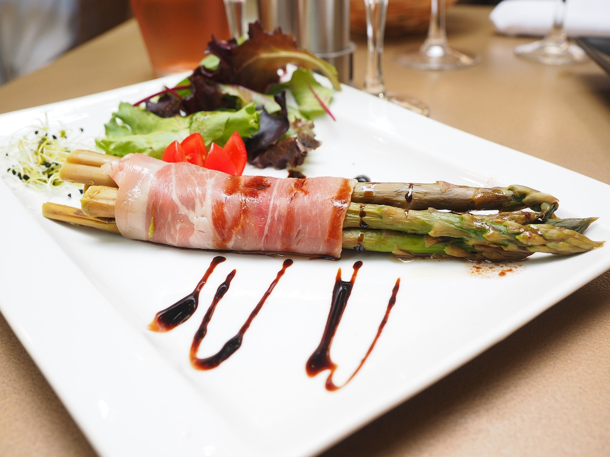
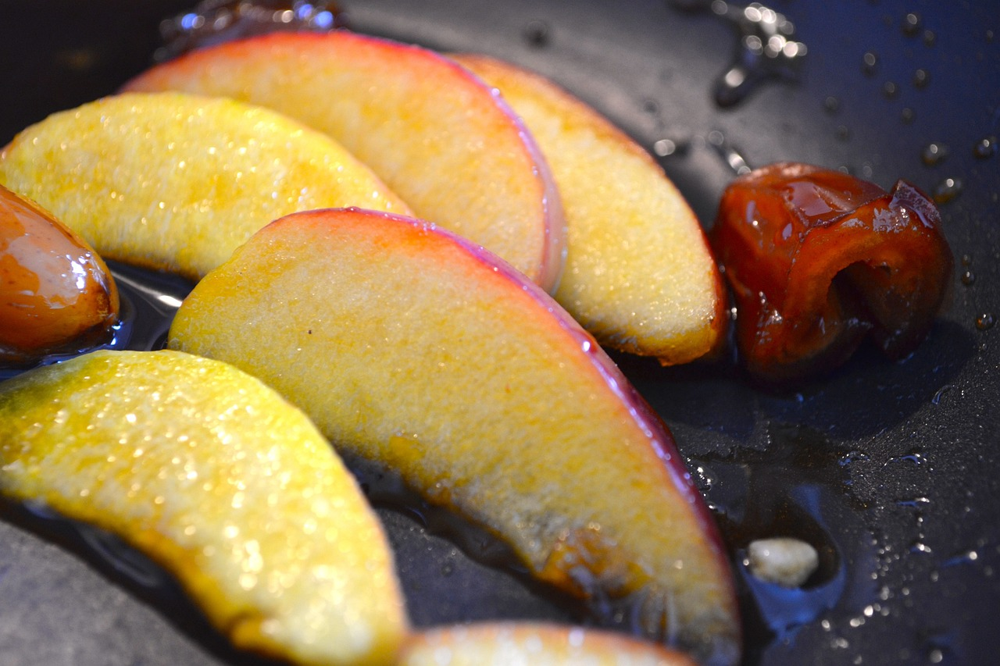
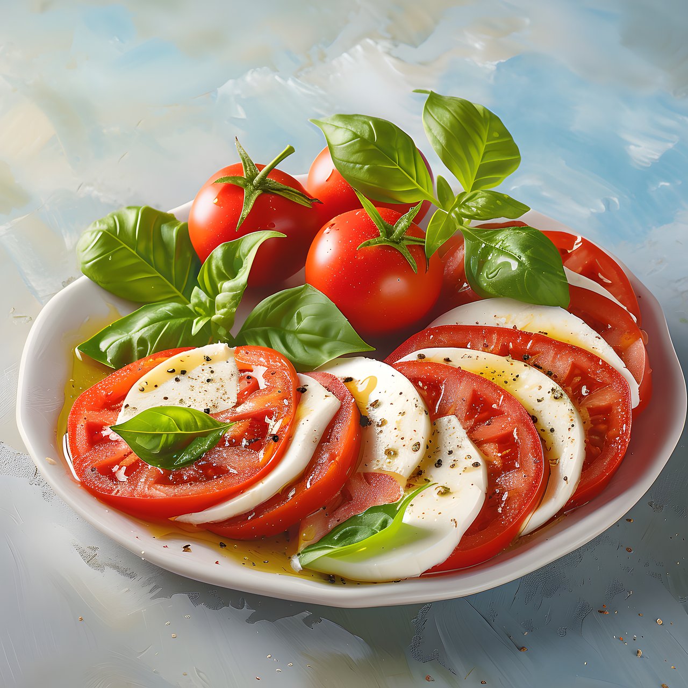

Avokado och räksmörgås

- 2 avokado
- 150 g räkor
- 1 lime, saften
- 1 kruka koriander
- 4 skivor bröd
- salt och peppar
Grillad Sparris med Parmaskinka
Kalorier: 120 kcal
Grillad persika med honung
Kalorier: 100 kcal
Tomattartar
Avokado och räksmörgås